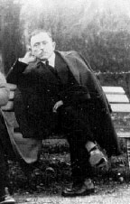

| Σκαρίμπας Γιάννης (1893-1984)  Γεννήθηκε στην Αγία Ευθυμία Φωκίδος το 1893, έζησε όμως το μεγαλύτερο μέρος της ζωής του στη Χαλκίδα. Προικισμένος με σπάνια λογοτεχνική ενόραση είχε τη δυνατότητα να κινείται με άνεση σε όλα σχεδόν τα είδη του γραπτού λόγου (διήγημα, νουβέλα, ποίηση, μυθιστόρημα, ιστορικό δοκίμιο, θέατρο κ.λ.π.). Πρωτοεμφανίστηκε στην ελληνική λογοτεχνία το 1929, όταν, σε Διαγωνισμό του περιοδικού «Νεοελληνικά Γράμματα», πήρε το πρώτο βραβείο, με το διήγημά του «Καπετάν Σουρμελής ο Στουραϊτης». Καθιερώθηκε αμέσως ως συγγραφέας με δικό του προσωπικό ύφος, το περίφημο «α-λα-Σκαρίμπα» ύφος, όπως το αποκάλεσε τότε ο Κόντογλου, αλλά και άλλοι μετέπειτα μελετητές του. Με το πρώτο θεατρικό του έργο, «Ήχος του κώδωνος», ο Σκαρίμπας εισάγει το παράλογο στη λογοτεχνία μας. Ασχολήθηκε με την ποίηση και πολλά από τα ποιήματά του μελοποιήθηκαν από αξιόλογους συνθέτες (Γ. Σπανός, Χρ. Λεοντής, Ν. ¶σημος κ.ά.). Αγάπησε ιδιαίτερα τον Καραγκιόζη, και έστηνε παραστάσεις, με φιγούρες δικής του έμπνευσης και κατασκευής. Έγραψε το πολυσυζητημένο τρίτομο ιστορικό έργο, «Το Εικοσιένα και η αλήθεια», η έκδοση του οποίου προκάλεσε αληθινό σάλο, καθώς μέσα από τις σελίδες επιχείρησε να δώσει μιαν άλλη, απομυθοποιημένη, διάσταση στην εποποιία του 21. Αξιόλογα κρίθηκαν τα αντιπολεμικής λογοτεχνίας βιβλία του «Περίπολος Ζ» και «Φυγή προς τα εμπρός». Ανήσυχος στοχαστής, ο Σκαρίμπας, συνεχίζει και σήμερα να συγκινεί με την απλότητα, την ταπεινότητα και το αντισυμβατικό του πνεύμα. Ποιήματα και διηγήματα του Γιάννη Σκαρίμπα στο Διαδίκτυο |
||